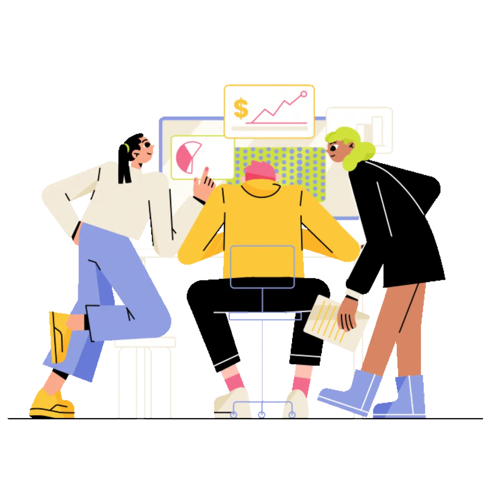

Saya tidak dapat berkonsentrasi pada penanganan kasus kekerasan dikarenakan pekerjaan administratif yang menyita waktu.

Saya berharap berbagi informasi kasus menjadi lebih mudah.

Tidak bisa terus-menerus melatih staff dengan pengalaman yang sedikit.